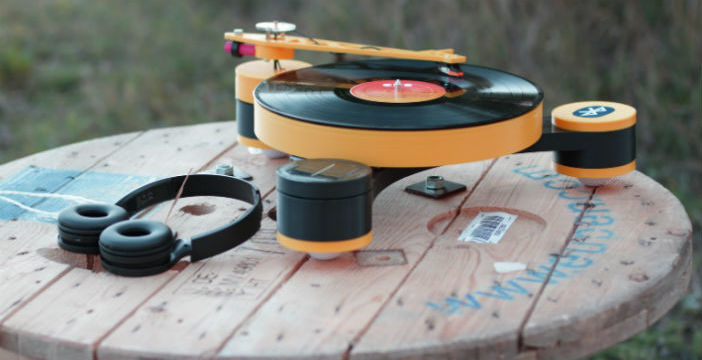

Ultime news dal settore maker
Giradischi modulare stampato in 3D
2 Dicembre 2018
Il progetto di Lenco MD, realizzato in collaborazione con l'azienda di stampanti 3D RepRapUniverse,
� stato ottimizzato per formare un giradischi con il minor numero possibile di pezzi
da realizzare tramite una stampante 3D.
In pratica abbiamo un telaio che poggia su tre piedini, uno dei quali contiene una scheda
pre phono con uscite di linea e presa cuffia, poi troviamo il braccio che va inserito sempre
sul piedino principale e il piatto.
Costruirsi i robot con un kit
27 Novembre 2018

La creazione semplice ed economica di robot, fino a 4 assi e 4 gradi di libert�,
� oggi alla portata
di qualsiasi progettista e applicazione.
RS Components, distributore globale di prodotti di elettronica e manutenzione,
ha presentato
due nuovi kit che comprendono tutti i componenti per la costruzione
di un braccio completamente
robotizzato a 4 assi.
Automotive, stampa 3D in crescita per cinque anni
7 Novembre 2018

Causa della crescita � l'aumento della necessit� del settore automotive di produrre progetti
complessi in un breve lasso di tempo e la necessit� di utilizzare in modo efficiente le risorse.
Inoltre, la capacit� delle stampanti 3D di produrre parti personalizzate con precisione, meno costi
e tempi ridotto e
l'alta risoluzione del prodotto finito completano la crescita del mercato automotive.
Tuttavia, l'alto costo
di stampa e l'indisponibilit� di manodopera qualificata ostacolano la crescita
del settore.